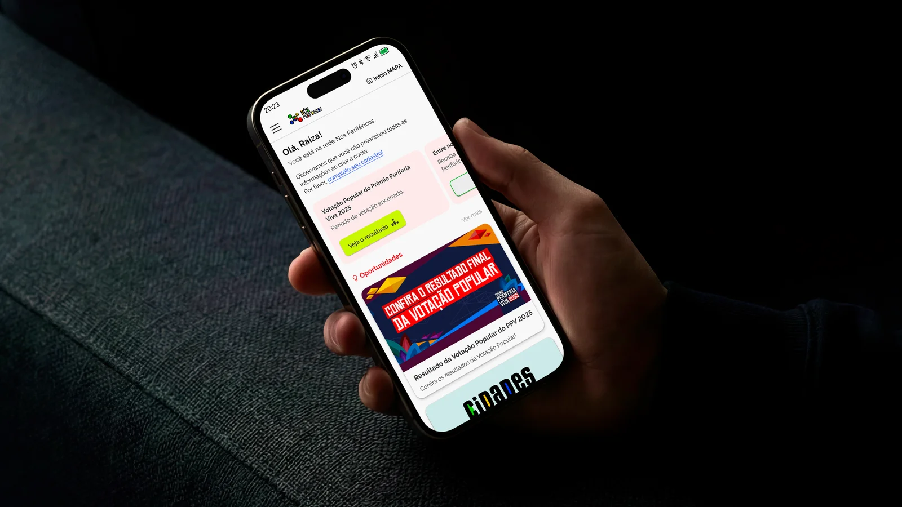
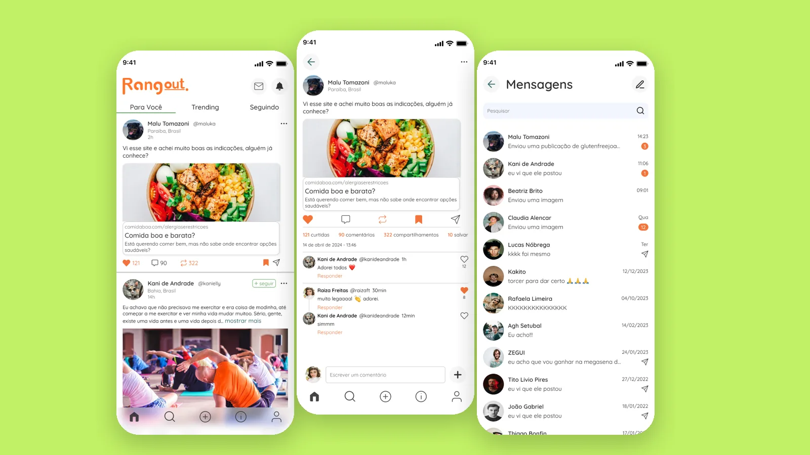
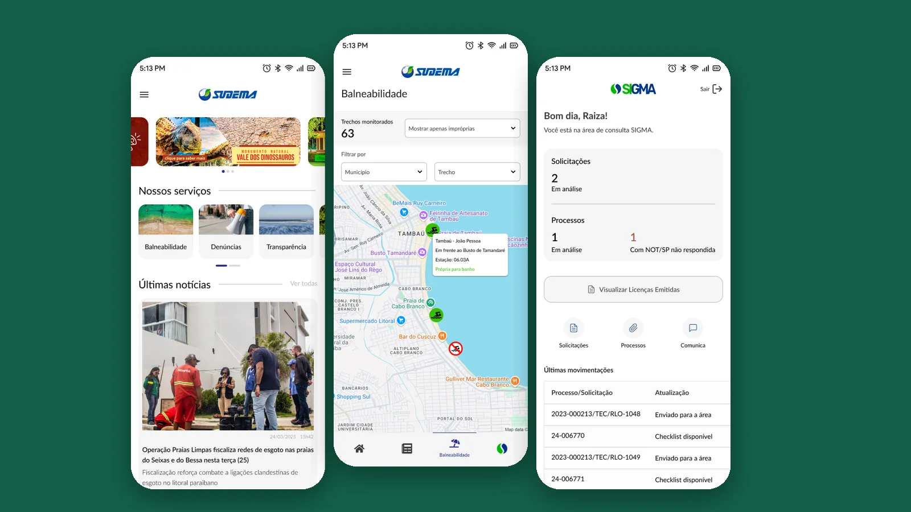
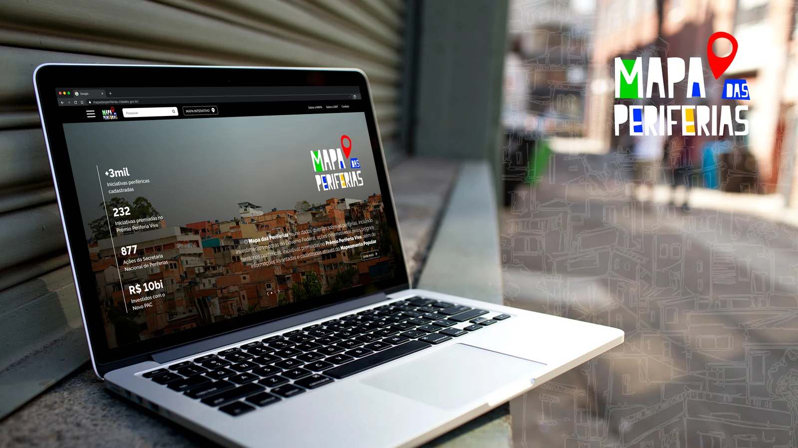
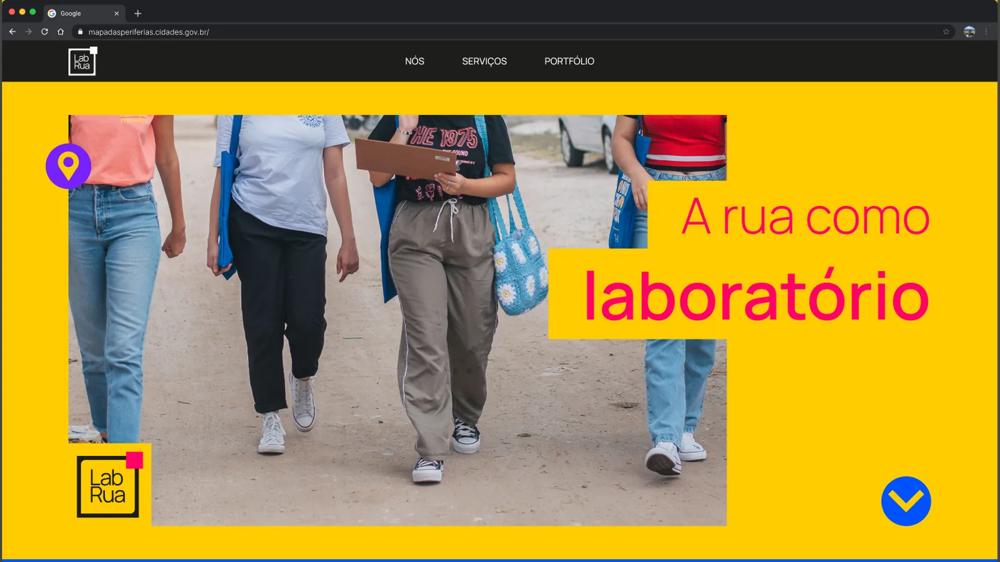
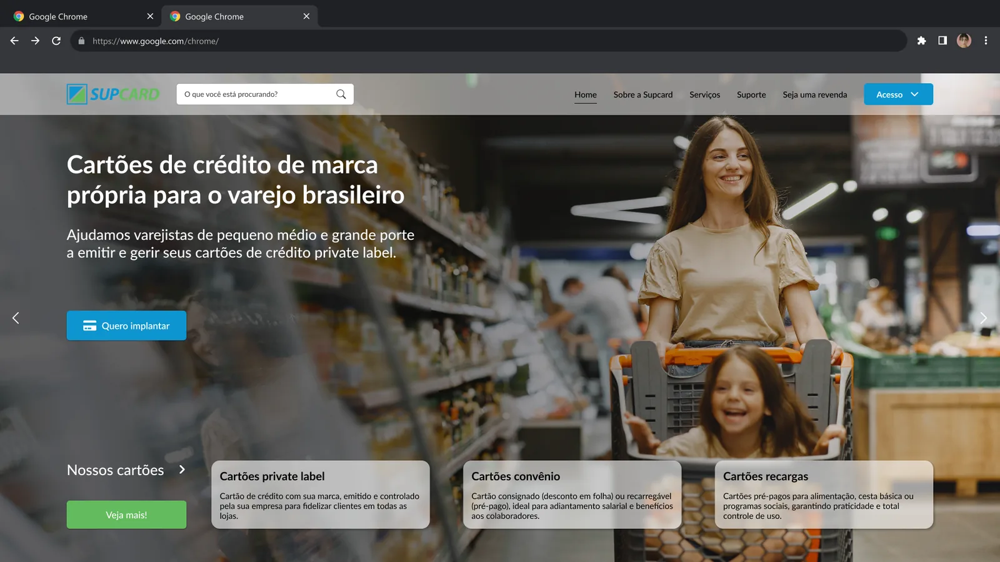

RaizaTomazoni
Designer de produto e UX. Desenho serviços públicos e produtos digitais que as pessoas conseguem usar sem precisar pedir ajuda.
Hoje no Ministério das Cidades, na Secretaria Nacional de Periferias, e na SUDEMA-PB. Formada em Arquitetura e Urbanismo pela UFCG.
Projetos
Estudos de caso completos, com processo, pesquisa e decisões de design.

Secretaria Nacional de Periferias, Ministério das Cidades
Nós Periféricos e Busca CEP
Plataforma criada do zero para iniciativas das periferias encontrarem editais, cursos e oportunidades do governo federal, e a busca que leva o CEP do programa CEP para Todos a quem mora em favelas e comunidades.
Ver estudo de caso
Startup social, trabalho voluntário
Rangout
Rede social para pessoas com restrições alimentares trocarem informação confiável, experiências e indicações de lugares seguros para comer. Da pesquisa ao protótipo de alta fidelidade e à identidade visual.
Ver estudo de caso
SUDEMA, Governo da Paraíba
Cadastro Técnico Estadual
Sistema para empreendedores, consultores e técnicos da SUDEMA registrarem e acompanharem atividades licenciadas, com fluxos pensados para três perfis muito diferentes.
Ver estudo de casoMais trabalhos
Sites e interfaces, com foco em UI e identidade visual.

Sudema+
App que reúne notícias, balneabilidade das praias e o acompanhamento de processos de licenciamento ambiental da SUDEMA.

Mapa das Periferias
Homepage do portal que reúne investimentos federais, ações e iniciativas nas periferias do Brasil.

Site do LabRua
Site para uma associação de planejamento urbano, com a paleta vibrante da identidade da marca.

Site da SUPCard
Site institucional para uma empresa de cartões de crédito de marca própria para o varejo.
Sobre
Sou UX/UI Designer e estudante de Sistemas para Internet no IFPB, com formação em Arquitetura e Urbanismo.
Da arquitetura trouxe o hábito de começar pelo uso: quem vai passar por ali, com que pressa, com que dúvida. Hoje aplico isso a sistemas de governo e produtos digitais, com pesquisa, prototipação e design systems, e com base de front-end para conversar bem com quem desenvolve.
Há um gosto de vitória e encanto na condição de ser simples. Não é preciso muito para ser muito.Lina Bo Bardi
Experiência
- UX DesignerSecretaria Nacional de Periferias, Ministério das Cidades
- UX DesignerSUDEMA, Superintendência de Administração do Meio Ambiente da Paraíba
- Arquiteta e UrbanistaNODA Arquitetura
- Arquiteta e UrbanistaOficina Espacial
Formação
- Sistemas para InternetIFPB, Instituto Federal da Paraíba
- UX/UI/Product DesignUX Unicórnio
- Arquitetura e UrbanismoUFCG, com intercâmbio na Sheffield Hallam University
O que eu faço
- Design de produto
- UX Research
- Testes de usabilidade
- Design de interface
- Design systems
- Prototipação
- Identidade visual
- HTML, CSS e JavaScript
- Figma